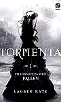

Tormenta
ComprarDescrição
Separados para se protegerem, Luce e Daniel enfrentam um novo dilema: confiar um no outro sem poder revelar a verdade. Cercada por segredos e ameaças, Luce precisa encontrar sua própria voz em meio ao caos. Neste segundo volume, o amor se torna mais perigoso do que nunca.
- Autor(a): Lauren Kate
- Número de páginas: 392